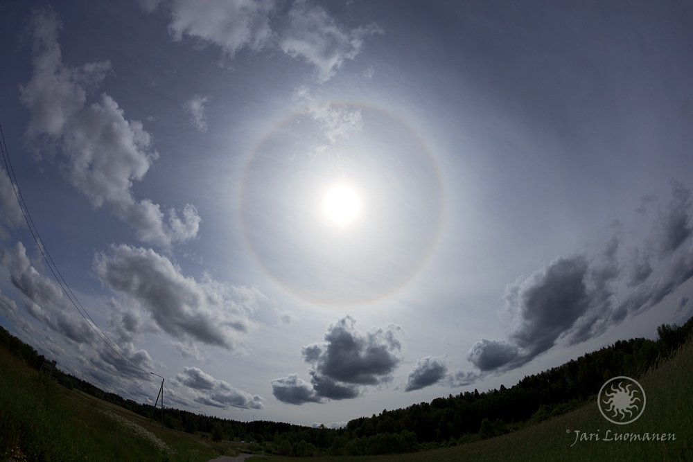
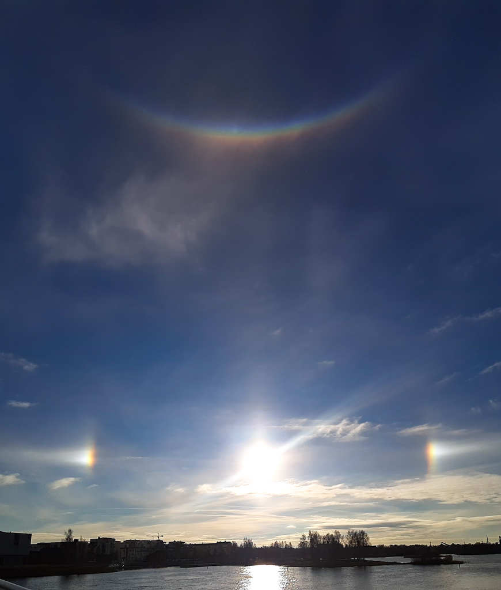
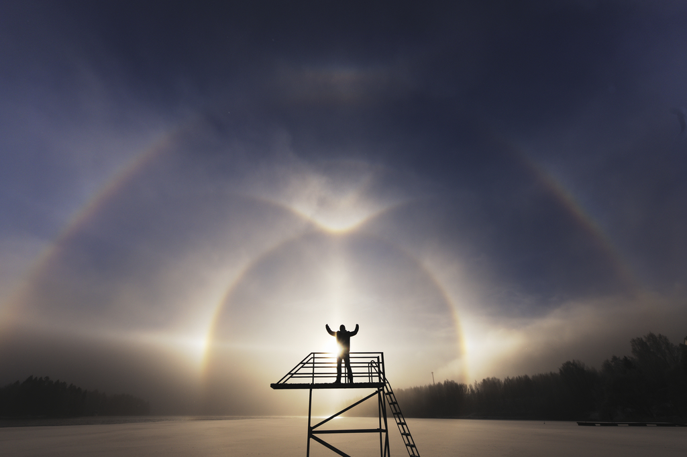
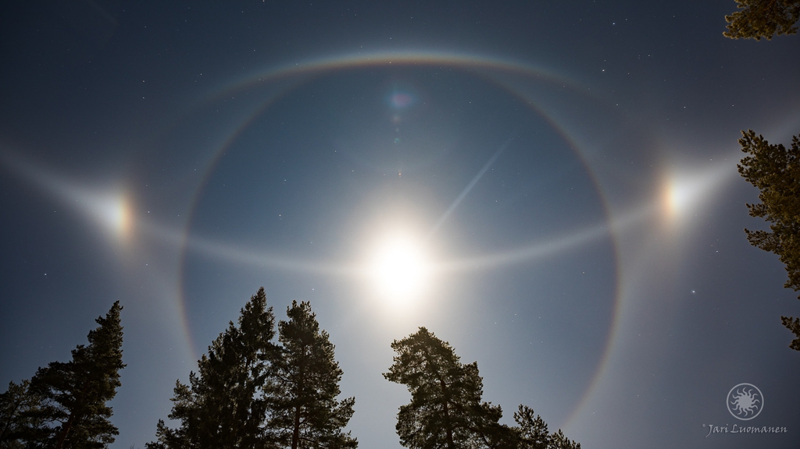
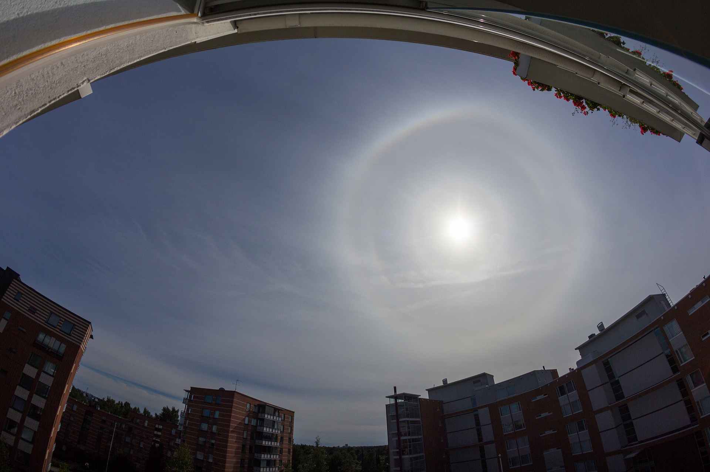
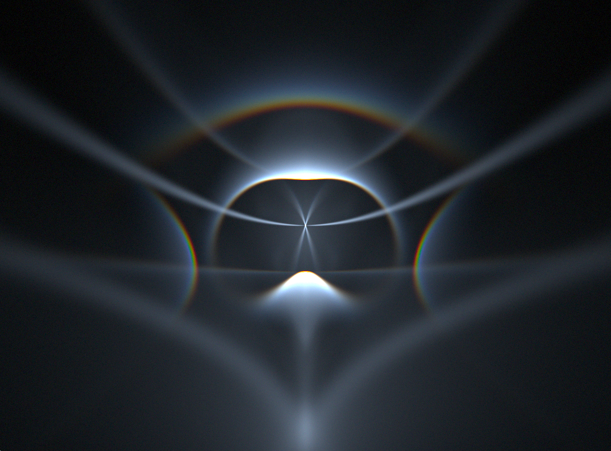

Haloilmiöt tietokoneessa
Samuli Vuorinen
27.7.2019
Taivaalle tuijottelua jo vuodesta 1988
Kuka?


Kuva: Janne Kari
Mitä haloilmiöt ovat?
Jääkiteitä + valoa = haloja
Jääkidemuodot
- Laattakiteet
- Pylväskiteet
- Pyramidikiteet
Sattumanvaraiset kiteet
Kuva: Jari Luomanen
Laattakidehalot

Kuva: Anne Väisänen
Pylväskidehalot

Kuva: Janne Voutilainen
Parry-halot
Kuva: Jari Luomanen
Lowitz-halot

Kuva: Jari Luomanen
Pyramidihalot

Simulaatio
Säteen kuljetus
HaloPoint 2.0 - Jukka Ruoskanen

Nopeus
-
Prosessori = Formula 1
- Suorittaa äärimmäisen nopeasti yhden asian
-
Näytönohjain = Tavarajuna
- Suorittaa yhden asian hieman hitaammin, mutta...
- Kykenee tekemään tuhansia asioita yhtä aikaa
Esimerkki
-
Intel i7-3770K
- Kellotaajuus 3,40 GHz
- 4 ydintä
-
NVIDIA Geforce GTX 1070
- Kellotaajuus 1,50 GHz
- 1920 ydintä !!!
Voisiko näytönohjainta hyödyntää? 🤔
HaloRay

HaloRay
- Aktiivinen kehitys aloitettu toukokuussa
- Windows & Linux
- Kaikki laskenta tapahtuu näytönohjaimella
- Avointa lähdekoodia
Vertailu
HaloPoint 2.0

5 000 000 sädettä, 5 min 11 s
HaloRay
500 000 000 sädettä, 23 s
Vertailu
HaloPoint 2.0 - 16 000 sädettä / s
HaloRay - 22 000 000 sädettä / s
~1400x ero

Tulossa
- Simulaation tallentaminen
- Pyramidikiteet
- Muut eksoottiset kidemuodot
-
Analyysiominaisuuksia
- Mikä valonkulku aiheutti tämän halon?